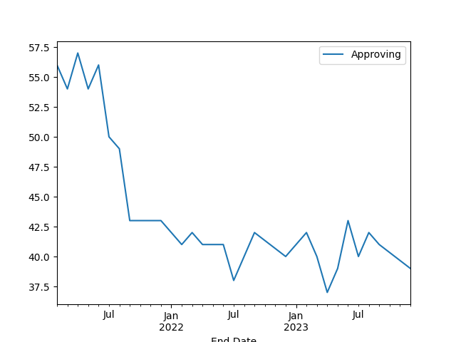
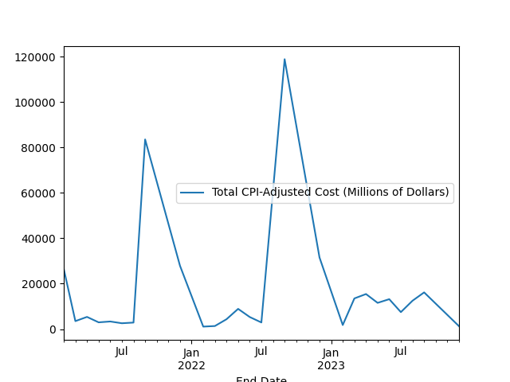

Overview:
This study aims to analyze the correlation between a president’s approval rating and the cost of severe weather events over one billion dollars. For this, information for presidential approval ratings was collected from ‘The American Presidency Project’. You can find their website at https://www.presidency.ucsb.edu/. The severe weather cost data was collected from the ‘National Centers for Environmental Information’. You can find their website at https://www.ncei.noaa.gov/. The presidents looked at in this study were presidents Joe Biden, Donald Trump, Barack Obama, George W. Bush, Bill Clinton, and George H. W. Bush. For each president, their is a graph for their approval rating and a graph of the costs of severe weather event disasters during their time in office. Additionally, there is specific information provided for each president for the correlation found.
Data Collection:
The severe weather events data is freely accessible as a .csv file. The presidential approval rating was not. The only way to freely get their data was in the html of their website that they use to display it. To solve this, I created a web scraping prgram that scrapes the html of their webpage for each president, taking only the raw data for each president and formatting it in a text file.
Statistical Analysis:
To determine the correlation between a president’s approval rating and the cost of severe weather events over one billion dollars, I used the Pearson correlation coefficient from the python package ‘pandas’. I created two data frames, one for each president’s approval rating and the other for the cost of severe weather events. I then formatted their date of occurrence so that I could combine the two dataframes based on their month and year of occurrence.
Possible Issues:
For each severe weather event, I used the end date for that event as the date to compare with a presiden’ts approval rating. There could an amount of time that the population would react to a severe weather event, which could push the change in approval rating from a severe weather event to a later month than when the severe weather event occurred.
Joe Biden
Information:
The data used for calculating the correlation between Joe Biden’s approval rating and the cost of weather disasters over one billion dollars was from February of 2021 to March of 2024. This gave us 26 points of data where there was an approval rating released and a cost of a severe weather event released during the same month.


Results:
By using the Pearson correlation coefficient from the python package ‘pandas’, the result was -0.1182. For a correlation between two events to exist the Pearson correlation coefficient should be at least > 0.2 or < -0.2. Because the correlation here does not fall in those boundaries, we can say that there is no statistical correlation between president Joe Biden’s approval ratings and the costs of severe weather events over one billion dollars during his term.
The data used for calculating the correlation between Joe Biden’s approval rating and the cost of weather disasters over one billion dollars was from February of 2021 to March of 2024. This gave us 26 points of data where there was an approval rating released and a cost of a severe weather event released during the same month.
By using the Pearson correlation coefficient from the python package ‘pandas’, the result was -0.1182. For a correlation between two events to exist the Pearson correlation coefficient should be at least > 0.2 or < -0.2. Because the correlation here does not fall in those boundaries, we can say that there is no statistical correlation between president Joe Biden’s approval ratings and the costs of severe weather events over one billion dollars during his term.
Donald Trump
Information:
The data used for calculating the correlation between Donald Trump’s approval rating and the cost of weather disasters over one billion dollars was from January of 2017 to January of 2021. This gave us 40 points of data where there was an approval rating released and a cost of a severe weather event released during the same month.
Results:
By using the Pearson correlation coefficient from the python package ‘pandas’, the result was -0.3748. Since it is between -0.4 and -0.2, there is a slight inverse correlation between president Donald Trump’s approval rating and the cost of weather disasters over one billion dollars.
Analysis:
Looking at the graphs, the main area of interest is the second half of 2017. During that time, there was a severe weather event that resulted in roughly $328 billion in costs, and during the same time, president Trump’s approval rating fell to roughly 36% approving. During August, there were three tropical cyclone incidents that resulted in $155 billion, $62 billion, and $111.16 billion in costs.
Looking at the graphs, the main area of interest is the second half of 2017. During that time, there was a severe weather event that resulted in roughly $328 billion in costs, and during the same time, president Trump’s approval rating fell to roughly 36% approving. During August, there were three tropical cyclone incidents that resulted in $155 billion, $62 billion, and $111.16 billion in costs.
Barack Obama
Information:
The data used for calculating the correlation between Barack Obama’s approval rating and the cost of weather disasters over one billion dollars was from January of 2009 to January of 2017. This gave us 64 points of data where there was an approval rating released and a cost of a severe weather event released during the same month.
Results:
By using the Pearson correlation coefficient from the python package ‘pandas’, the result was -0.0369. For a correlation between two events to exist the Pearson correlation coefficient should be at least > 0.2 or < -0.2. Because the correlation here does not fall in those boundaries, we can say that there is no statistical correlation between president Barack Obama approval ratings and the costs of severe weather events over one billion dollars during his term.
George W. Bush
Information:
The data used for calculating the correlation between George W. Bush’s approval rating and the cost of weather disasters over one billion dollars was from February of 2001 to January of 2009. This gave us 41 points of data where there was an approval rating released and a cost of a severe weather event released during the same month.
Results:
By using the Pearson correlation coefficient from the python package ‘pandas’, the result was -0.0048. For a correlation between two events to exist the Pearson correlation coefficient should be at least > 0.2 or < -0.2. Because the correlation here does not fall in those boundaries, we can say that there is no statistical correlation between president George W. Bush’s approval ratings and the costs of severe weather events over one billion dollars during his term.
Bill Clinton
Information:
The data used for calculating the correlation between Bill Clinton’s approval rating and the cost of weather disasters over one billion dollars was from January of 1993 to January of 2001. This gave us 41 points of data where there was an approval rating released and a cost of a severe weather event released during the same month.
Results:
By using the Pearson correlation coefficient from the python package ‘pandas’, the result was -0.14917. For a correlation between two events to exist the Pearson correlation coefficient should be at least > 0.2 or < -0.2. Because the correlation here does not fall in those boundaries, we can say that there is no statistical correlation between president Bill Clinton’s approval ratings and the costs of severe weather events over one billion dollars during his term.
George H. W. Bush
Information:
The data used for calculating the correlation between George H. W. Bush’s approval rating and the cost of weather disasters over one billion dollars was from February of 1989 to December 1992. This gave us 41 points of data where there was an approval rating released and a cost of a severe weather event released during the same month.
Results:
By using the Pearson correlation coefficient from the python package ‘pandas’, the result was 0.2604. Since it is between -0.4 and -0.2, there is a slight inverse correlation between president Trump’s approval rating and the cost of weather disasters over one billion dollars.
Analysis:
Looking at the graphs, the main area of interest is around July to September of 1992. During that time, there were a severe weather events that resulted in roughly $67 billion in costs, and during the same time, president Bush’sapproval rating fell to roughly 33% approving. From July to September of 1992, there was a severe storm that resulted in roughly $1.368 billion in costs, and there were two tropical cyclone incidents that resulted in roughly $58.86 billion and roughly $6.7 billion in costs.
Looking at the graphs, the main area of interest is around July to September of 1992. During that time, there were a severe weather events that resulted in roughly $67 billion in costs, and during the same time, president Bush’sapproval rating fell to roughly 33% approving. From July to September of 1992, there was a severe storm that resulted in roughly $1.368 billion in costs, and there were two tropical cyclone incidents that resulted in roughly $58.86 billion and roughly $6.7 billion in costs.
Overall Conclusions:
This study does not claim that severe weather events are the cause of drops in a presidential’s approval rating, but there is room to suggest that possibly after a severe weather event, the United States citizens are more critical of the president, resulting in a lower approval rating.
Future Analysis:
Another way of finding the correlation between a president’s approval rating and severe weather events could be through the death count for each severe weather event, since losing human lives could possibly result in more of a stronger response to the United States citizens.